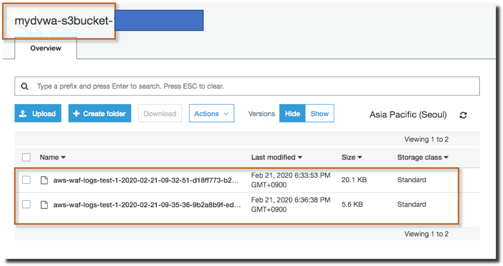

WAF 로깅
AWS WAF 로깅 활성화
모듈 1.5 에서 활성화 및 확인을 수행했습니다.
WAF 로그 발생
앞 선 모듈에서 발생한 로그들이 저장 되어 있어야합니다.
S3 콘솔로 이동한 뒤 “mydvwa-“로 시작하는 버킷을 찾은 뒤 가장 하위 경로로 내려가면 다음과 같이 로그가 쌓인 것을 확인할 수 있습니다.

- 생성된 파일 중 하나를 다운로드 하여 가장 익숙한 editor로 실행하고 살펴봅니다.
AWS WAF 로그 확인
다음은 요청의 WAF 로그 예입니다. 요청 평가를 종료 한 규칙에 대한 세부 정보를 받습니다. 로그에는 해당 요청에 대한 조치도 포함됩니다.

- 해당 요청이 TestRule에 의해 차단이 되었는지에 대한 내용 및 관련 자세한 사항을 확인 할 수 있습니다.
이전에 Redacted fields 에서 선택했던 “Query string” 에 대한 필드인 args가 “REDACTED” 로 표현되어있는 것을 확인 할 수 있습니다.
이를 발전시켜 다양한 분석에 활용할 수 있습니다.